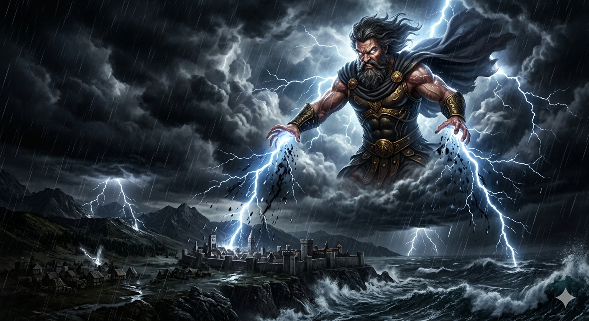
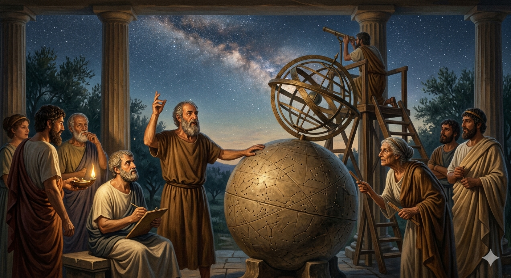
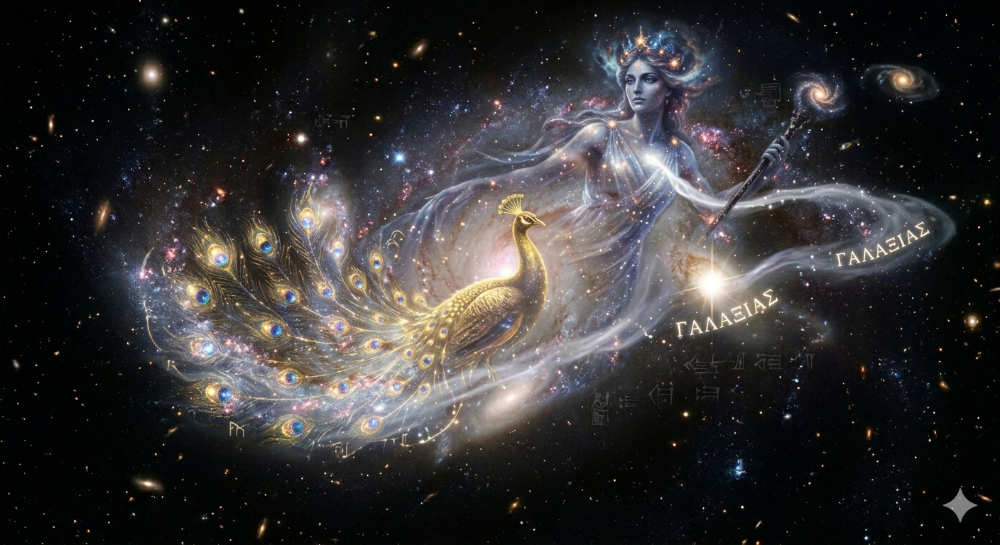
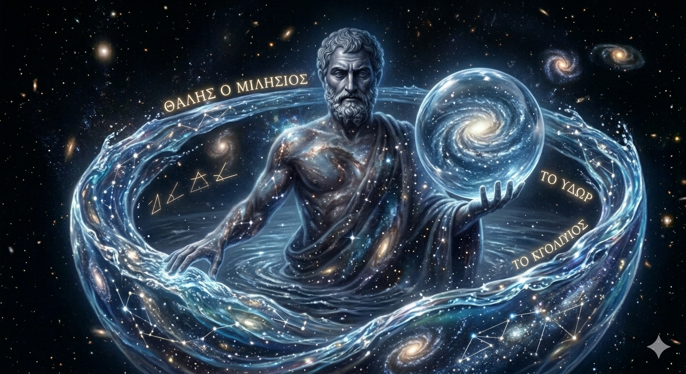
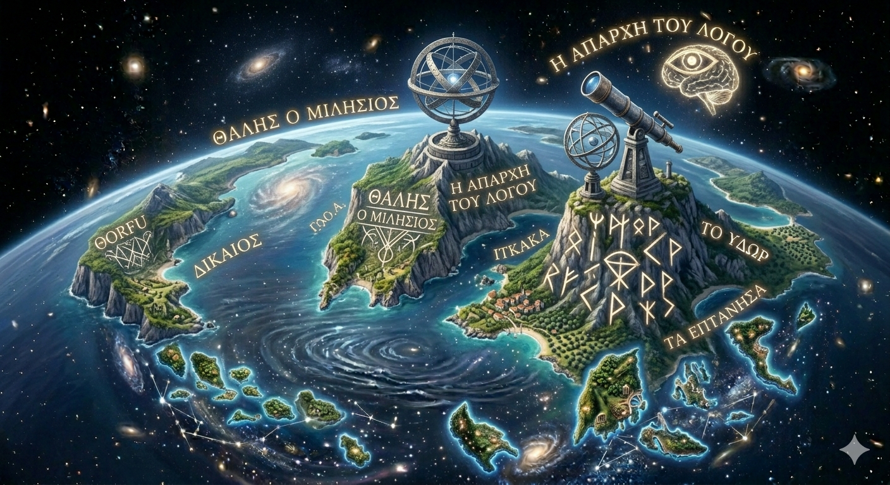
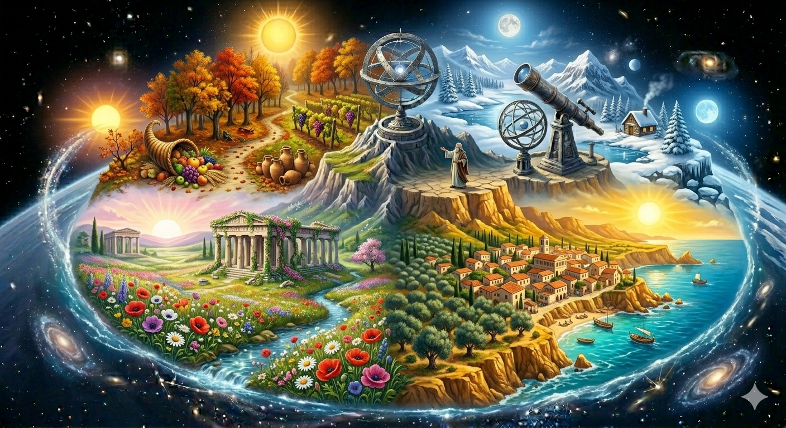

Curiosidades
¿Qué pasaba si los dioses se enojaban?
En muchas culturas antiguas, los fenómenos naturales y astronómicos eran interpretados como señales del enojo o la voluntad de los dioses. Cuando ocurrían eventos como tormentas, eclipses o caídas de estrellas, las personas creían que los dioses estaban disgustados.
Este enojo podía asociarse con castigos divinos, cambios en el destino de las personas o advertencias para la humanidad. Por eso, se realizaban rituales, ofrendas o ceremonias para calmar a los dioses y evitar consecuencias negativas.

¿Qué pensaban sobre las estrellas?
En la antigüedad, las estrellas no eran vistas como cuerpos celestes lejanos, sino como elementos mágicos o divinos. Muchas civilizaciones creían que eran espíritus, dioses o fuegos eternos en el cielo.
También se pensaba que las estrellas influían en la vida de las personas, dando origen a prácticas como la astrología. Además, servían como guía para la navegación y la medición del tiempo.

Origen del nombre "Vía Láctea"
El nombre "Vía Láctea" proviene de la mitología griega y está relacionado con la diosa Hera. Según el mito, la galaxia se formó a partir de la leche derramada de Hera mientras amamantaba a Heracles.
Por esta razón, se la asocia con una especie de "camino de leche" en el cielo, y en algunas culturas también se la conoce como el "espinazo de la noche", imaginando una gran estructura que sostiene el firmamento.

Primer científico
Uno de los primeros científicos reconocidos fue Tales de Mileto, un pensador de la antigua Grecia. Se destacó por intentar explicar el mundo a través de la razón y la observación, en lugar de recurrir únicamente a explicaciones mitológicas.
Su enfoque marcó el inicio del pensamiento científico, buscando causas naturales para los fenómenos.

Origen del pensamiento racional
El pensamiento racional surge principalmente en las islas jónicas y en la antigua Grecia. Allí, filósofos como Tales comenzaron a cuestionar las explicaciones tradicionales basadas en mitos y a buscar respuestas mediante la lógica y la observación.
Este cambio fue clave para el desarrollo de la ciencia y la filosofía occidental.

Descubrimiento de las estaciones
Las estaciones del año no fueron "descubiertas" por una sola persona, pero ya en la antigüedad se estudiaban sus causas. Filósofos como Anaximandro realizaron observaciones y experimentos sencillos para comprender los cambios en el clima y la posición del Sol.
Con el tiempo, se entendió que las estaciones se deben al movimiento de la Tierra alrededor del Sol y la inclinación de su eje.
